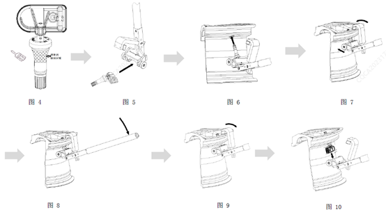

步骤1:涂抹润滑油可以通过毛刷涂抹在指定区域见图4, 流动性好的润滑剂亦可通过喷洒方式附着在嘴杆上或通过自制工装对嘴杆部分进行批量涂抹具体的工具和方法可以通过产线的特点进行确定注意润滑剂。膏涂抹时应尽量避开电子模块气孔、不得有膏状润滑剂压入气孔 , 以免引起堵塞，严禁将传感器（电子模块）浸泡在润滑剂中；
步骤2:将传感器电子模块顺畅的装入专用工具主体的预设槽内, 见图5；
步骤3:连同专用工具，将传感器气门嘴插入轮辋气孔，直至嘴杆锥面处橡胶接触到轮辋气孔内侧，见图6；
步骤4:再将专用工具挂钩旋转挂住轮辋外缘，随后将专用工具滚轮贴住轮辋内表面，见图7；
步骤5:握住专用工具手柄，垂直往下按压下压力F≈220N, 传感器卡扣嘴受力被挤压装入轮辋气孔。下压过程中下压力会逐渐增大后突然变小，变小后则说明气门嘴标识环已经被压出，气门嘴已安装到位，见图 8。按压手柄时观察气门嘴与轮辋孔是否在同一轴线，如发现明显倾斜，则说明工装和轮辋不匹配，需要重新校核工装；
步骤6:取下挂钩，见图9；
步骤7:移去专用工具 , 安装完毕 , 见图10。
